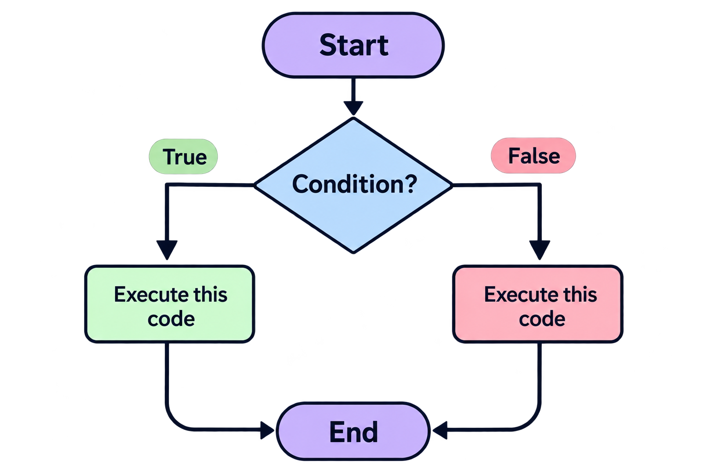

Умовні конструкції (Conditional Statements) — це конструкції мови JavaScript, які дозволяють виконувати різні блоки коду залежно від того, чи є певна умова істинною (true) або хибною (false). Простими словами, програма перевіряє певну умову і вирішує, який код потрібно виконати.

1. Конструкція if
if — це умовна конструкція, яка виконує блок коду лише тоді, коли задана умова є істинною (true).
if (condition) {
// Code to execute if the condition is true
}let age = 20;
if (age >= 18) {
console.log("You are an adult.");
}
//Буде виведено повідомлення -
You are an adult.
------------------------------------
let age = 16;
if (age >= 18) {
console.log("You are an adult.");
}
//У цьому випадку повідомлення не буде виведено,
оскільки умова повертає false.Важливо: якщо умова if є хибною, блок коду просто пропускається.
2. Конструкція if...else
if...else — це умовна конструкція, яка дозволяє виконати один блок коду, якщо умова істинна (true), або інший блок коду, якщо умова хибна (false).
if (condition) {
// Code if condition is true
} else {
// Code if condition is false
}let age = 16;
if (age >= 18) {
console.log("You are an adult.");
} else {
console.log("You are a minor.");
}
//You are a minor.Важливо: JavaScript перевіряє умову, якщо умова true, виконується блок if, якщо умова false, виконується блок else, тобто виконується лише один із двох блоків.
3. Конструкція if...else if...else
if...else if...else — це умовна конструкція, яка дозволяє перевіряти декілька умов послідовно.
Вона використовується, коли потрібно обрати один із декількох варіантів.
if (condition1) {
// Code if condition1 is true
} else if (condition2) {
// Code if condition2 is true
} else if (condition3) {
// Code if condition3 is true
} else {
// Code if all conditions are false
}let score = 75;
if (score >= 90) {
console.log("Grade: A");
} else if (score >= 80) {
console.log("Grade: B");
} else if (score >= 70) {
console.log("Grade: C");
} else if (score >= 60) {
console.log("Grade: D");
} else {
console.log("Grade: F");
}
//Grade: CВажливо: у конструкції if...else if...else виконується лише перший блок, умова якого є істинною, тобто JavaScript виконує перший блок і не переходить до наступної умови.
Тому умови потрібно розташовувати від найбільш специфічних або суворих до менш суворих.
4. Вкладені умовні конструкції (Nested if)
Вкладена умовна конструкція (Nested if) — це умовна конструкція if, яка знаходиться всередині іншої умовної конструкції. Вона дозволяє перевіряти додаткові умови лише після виконання попередньої.
if (condition1) {
if (condition2) {
// Code if both conditions are true
}
}let age = 20;
let hasTicket = true;
if (age >= 18) {
if (hasTicket) {
console.log("You can enter.");
}
}
//You can enter.let age = 16;
if (age >= 18) {
console.log("You are an adult.");
} else {
if (age >= 13) {
console.log("You are a teenager.");
} else {
console.log("You are a child.");
}
}
//You are a teenager.Важливо: вкладені конструкції варто використовувати тоді, коли вони роблять логіку зрозумілішою. Надмірна кількість вкладень ускладнює читання коду.
5. Конструкція switch
switch — це умовна конструкція, яка використовується для вибору одного з декількох блоків коду залежно від значення певного виразу.
Вона може бути зручнішою за if...else if, коли потрібно порівняти одну змінну з кількома конкретними значеннями.
switch (expression) {
case value1:
// Code for value1
break;
case value2:
// Code for value2
break;
default:
// Code if no case matches
}Розберемо кожен елемент:
switch - починає конструкцію вибору.
expression - вираз, значення якого перевіряється.
case - варіант значення для порівняння.
break - завершує виконання switch.
default - виконується, якщо жоден case не збігся.
let day = 3;
switch (day) {
case 1:
console.log("Monday");
break;
case 2:
console.log("Tuesday");
break;
case 3:
console.log("Wednesday");
break;
default:
console.log("Unknown day");
}
//WednesdayДля чого потрібен break?
break - зупиняє виконання конструкції switch. Якщо його не використати, JavaScript продовжить виконувати наступні case, навіть якщо вони не збігаються з початковим значенням. Це називається fall-through.
Особливість switch
switch - використовує строге порівняння (===).
let value = "1";
switch (value) {
case 1:
console.log("Number");
break;
case "1":
console.log("String");
break;
}
//String
//Тому що "1" — це рядок, а 1 — число.6. Логічні значення в умовах (Truthy and Falsy)
В JavaScript умова не обов'язково повинна бути безпосередньо true або false. JavaScript може перетворювати інші значення на логічні під час перевірки умови.
Truthy
значення, які в умовному контексті стають true
Приклади значень, які є Truthy: true (логічне істинне значення), 1 (число), -1 (від'ємне число), "Hello" (непорожній рядок), "0" (рядок, що містить нуль), [] (порожній масив), {} (порожній об'єкт)
let username = "Alex";
if (username) {
console.log("Username exists.");
} else {
console.log("Username is empty.");
}
//Username exists.
Falsy
значення, які в умовному контексті стають false
До Falsy значень належать: false (логічне хибне значення), 0 (число нуль), -0 (від'ємний нуль), 0n (вigInt нуль), "" (порожній рядок), null (відсутність значення), undefined (значення не визначене), NaN (не є числом)
let username = "";
if (username) {
console.log("Username exists.");
} else {
console.log("Username is empty.");
}
//Username is empty.
//Оскільки порожній рядок "" є Falsy,
виконується блок else.